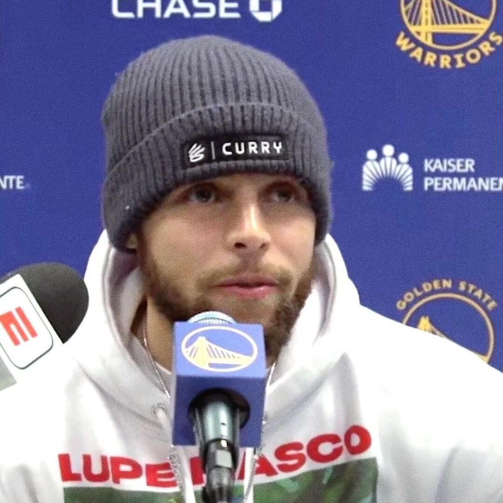
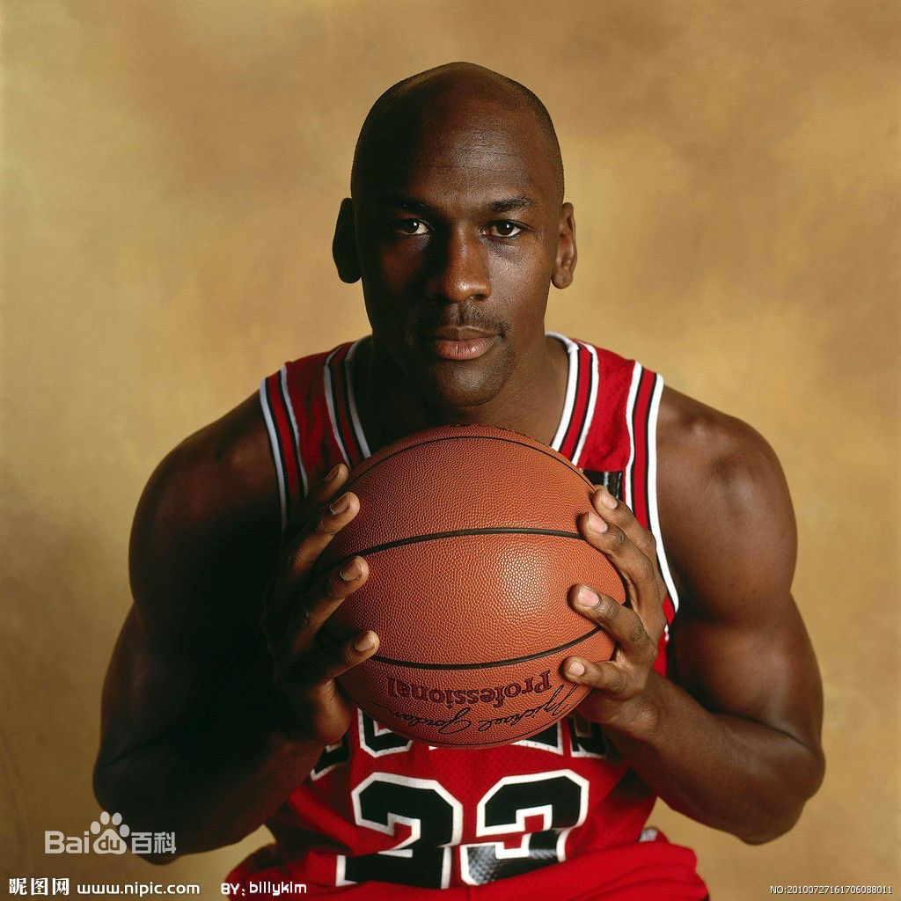

Curry
Wardell Stephen Curry is an American professional basketball player for the Golden State Warriors of the National Basketball Association (NBA). Widely regarded as the greatest shooter and one of the greatest players of all time, Curry is credited with revolutionizing the sport by inspiring teams and players to take more three-point shots. He is a four-time NBA champion, a two-time NBA Most Valuable Player (MVP), an NBA Finals MVP, an NBA All-Star Game MVP, a nine-time NBA All-Star, and a nine-time All-NBA selection, including four times on the first team.Curry is the son of former NBA player Dell Curry and the older brother of current NBA player Seth Curry. He played college basketball for the Davidson Wildcats, where he set career scoring records for Davidson and the Southern Conference, was named conference player of the year twice, and set the single-season NCAA record during his sophomore year for most three-pointers made. Curry was selected by the Warriors as the seventh overall pick in the 2009 NBA draft.
Basketball development
Jardan
Michael Jeffrey Jordan is an African-American former men's basketball player. Jordan played all of his professional basketball career in the NBA, including 13 years with the Chicago Bulls and the last two years with the Washington Wizards, and came out of retirement three times. Jordan is the most influential basketball player in NBA history, as well as a highly marketable basketball player, contributing to the rapid global popularity of the NBA in the 1980s and 1990s. Jordan attended the University of North Carolina at Chapel Hill in North Carolina in 1984 and was selected by the Chicago Bulls with the third overall pick in the 1984 NBA draft. During his 15-year career, he won six NBA championships (two three-peat championships), six NBA Finals Most Valuable Player, five NBA Most Valuable Player, three NBA All-Star Game Most Valuable Player, 10 NBA scoring titles (seven in a row from 1987 to 93, three in a row from 1996 to 98), and three intercept titles. He was selected to 10 All-NBA teams, 14 NBA All-Star Games, and the 1988 NBA Defensive Player of the Year. Among his many accomplishments, he still holds the all-time NBA record for points per game in the regular season (30.12) and the all-time NBA record for points per game in the playoffs (33.45).
